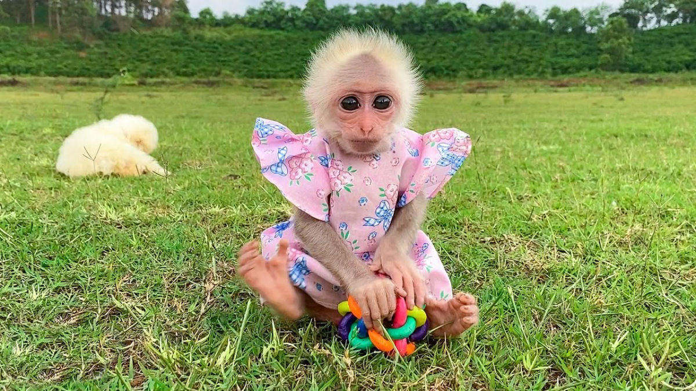

MAMACA SEM CABELO
a mamaca sem cabelo,ela fede

nao clique na imagem
essa é uma mamaca sem cabelo e o nome dela é bibi e ela é uma mamaca fedida ela gosta de comer pelo de cachorro e piolho de cobra e entao pelo fato dela comer piolh de cobra ela fica fedida